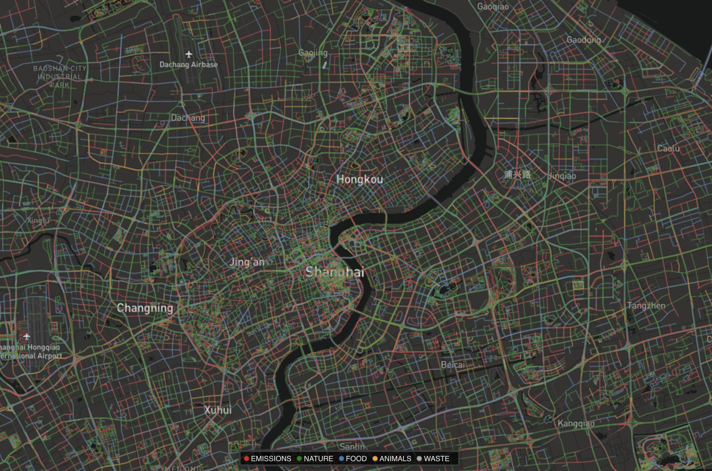

Urban Probe
2019-10
Background
This project centers on collecting and analyzing urban data by bike-sharing. We designed Bike Rover, a tiny low-power device which integrates several types of environmental sensors. We are also planning to mount those sensors on some bikes and collect city-wise environment data.
This project is inspired by Smelly Map by GoodCityLife , the Smelly Map analyzed geo-tagged smell-related Twitter data and visualize them on map. We want to follow this research in a different view, instead of analyzing text data, we can also collect data by sensors, which is more objective than human feelings. We can also compare the human feelings about the environment (which is mined by Weibo or Twitter) with the real data collected by sensors, to measure the difference between subjective feelings and objective situations.
Sensors
Here’s some of sensor we used:
- DFRobot PM2.5 Air Quality sensor
- MQ136 H2S sensor
- MQ137 NH3 sensor
- MS1100 VOCs sensor
- Temperature&Humidity sensor
I also intergrated NB-IoT module to support data uploading, so that we can collect and analyze data remotely. The whole device can powered by a 2000 mAh solar battery. Here’s BOM.
Social Media
I used the pipeline proposed by Smelly Map. I crawled geo-tagged Weibo data from 09/2019 to 10/2019 in Shanghai, extracted smell-related data, and plotted a Smelly Map in Shanghai.

Future Works
- This project is still on-going, I just developed a prototype device, still need to add housing and fixtures components.
- We are planning to analyze more kind of feelings from Weibo dataset, such as living condition, air quality, noise, green level and so on.